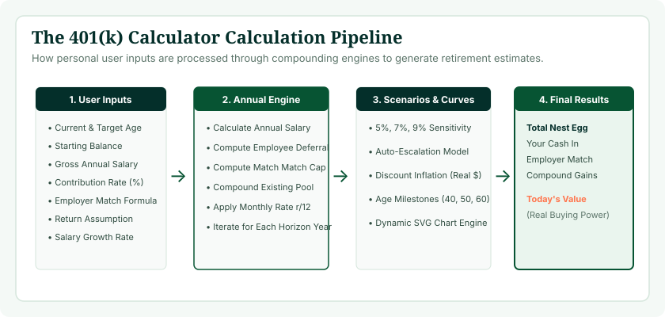
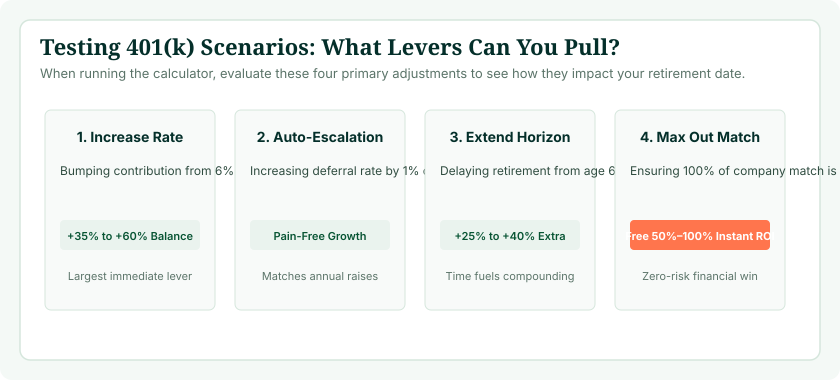

Planning for retirement can feel overwhelming when relying on vague rules of thumb or national averages. An authentic retirement plan requires looking directly at your personal financial reality: what you have saved today, what you contribute each month, how much your company matches, and how many years your portfolio has to compound. A modern 401(k) projection calculator takes these variables and synthesizes them into an actionable year-by-year forecast.
You can run your personal numbers right now using our verified 401(k) Calculator. In this practical guide, we break down the calculation mechanics behind the tool, examine each input field, show you how to stress-test different savings scenarios, and help you interpret nominal versus inflation-adjusted results.
Why Run a 401(k) Calculation Today?
Retirement savings math operates on an exponential curve. Discovering a savings gap at age 35 allows you to close it by increasing contributions by just 1% or 2% of salary. Waiting until age 55 to identify the same shortfall often requires saving 30% to 40% of income. Testing your numbers regularly gives you the leverage to make small, painless adjustments with massive long-term payoff.

The Seven Core Inputs of a 401(k) Calculator
To produce an authentic projection, our tool requires seven primary variables. Here is how to gather and enter each one accurately:
1. Current Age and Target Retirement Age
Your current age and desired retirement age establish your investment horizon (( t )). If you are 35 and plan to retire at 65, your runway is 30 years (360 monthly contribution cycles). The longer your time horizon, the more compound returns will dominate your eventual balance. If you are uncertain about retirement age, testing 62 (early retirement), 67 (Full Retirement Age for Social Security), and 70 is standard practice.
2. Current 401(k) Balance
Enter your existing account balance across all current workplace 401(k) plans. If you are starting your very first job or rebuilding savings after a hardship, enter $0. Our calculator fully supports starting from scratch and models how regular contributions build initial momentum.
3. Annual Gross Salary
Enter your current annual base salary before taxes and payroll deductions. This is essential because both your employee elective deferral and your employer matching contribution are calculated as percentages of your salary.
4. Employee Contribution Rate (%)
Enter the percentage of your salary diverted into your 401(k) plan through automatic payroll deduction. For example, on an $80,000 salary, an 8% contribution equals $6,400 per year ($533.33 per month). For 2026, the standard IRS elective deferral limit is $23,500.
5. Employer Match Formula
Workplace matching formulas typically follow a two-tier structure: Match Percentage and Salary Cap. For instance, a common formula is “50% match up to 6% of salary.” If you earn $80,000 and contribute 6%, your employer contributes 3% ($2,400 per year). Our tool includes an intuitive toggle that applies the exact matching rules of your employer.
6. Expected Annual Investment Return (%)
This is your assumed annual portfolio growth rate. As discussed in our detailed guide on what rate of return to use for a 401(k) calculator, financial planners recommend using 7% as a moderate baseline for a balanced portfolio, while testing 5% (conservative) and 9% (aggressive) bounds.
7. Inflation Adjustment Option
Toggling inflation adjustment recalculates future balances into real purchasing power based on historical inflation rates (~2.7% to 3.0%), showing you what that future million-dollar nest egg will actually buy in today's grocery stores and housing markets.
Ready to Estimate Your 401(k) Nest Egg?
Enter your numbers into our interactive tool to see how your current savings and future deposits build your retirement wealth.
Launch 401(k) Calculator →Behind the Math: How the Calculation Engine Works
Many simple online calculators use annualized formulas that underestimate compound interest by applying contributions once at year-end. Real 401(k) contributions occur on every semi-monthly or monthly paycheck. Our calculation engine utilizes monthly compounding intervals:
Future Value = ( P imes (1 + rac{r}{12})^{12t} + PMT imes rac{(1 + rac{r}{12})^{12t} - 1}{ rac{r}{12}} )
Where:
- P: Starting 401(k) balance.
- r: Assumed annual rate of return.
- t: Number of years until retirement.
- PMT: Total monthly contribution (Employee Deduction + Employer Match).
Each month, your regular payroll contribution is added to the starting balance, and investment returns are compounded across the combined amount, ensuring mathematical accuracy that mirrors actual plan administration.

Interpreting Your Results: Three Key Metrics
When our calculator generates your results, you should evaluate three core data points:
| Result Metric | What It Measures | How to Interpret It |
|---|---|---|
| Projected Total Balance | Estimated final account value at retirement age | Use the 4% rule (Balance × 0.04) to estimate annual retirement income from your nest egg. |
| Total Contributions | The cumulative out-of-pocket deposits from you and your employer | Shows the actual capital you invested over your career. |
| Total Compound Growth | The dollar return generated entirely by market gains | Demonstrates the power of compound interest. In healthy plans, this accounts for 60%–75% of total wealth. |
Running Scenario Testing: The Power of “What If?”
The true power of an interactive calculator is testing scenarios to see which levers offer the highest financial leverage. Here are three powerful simulations to run:
Scenario A: The "Save 2% More" Test
Keep your salary, balance, and return assumptions constant, but raise your contribution from 6% to 8%. On an $80,000 salary over 25 years at 7% return, saving an additional 2% ($133/month) adds over $101,000 to your retirement nest egg. Small percentage increases make massive differences.
Scenario B: The "Work Two Extra Years" Test
Test retiring at age 67 instead of 65. Those two additional years deliver a triple compounding boost: you deposit two more years of contributions, your entire accumulated balance compounds for two more years without withdrawals, and your Social Security benefit permanently increases.
Scenario C: The Conservative Return Test
Drop your expected return assumption from 7% to 5.5%. Does your plan still survive? If your retirement goals are met even under conservative return conditions, your financial plan has built-in resilience against prolonged bear markets.
Catch-Up Contributions: Factoring in Age 50+ Rules
If you are 50 or older, IRS regulations allow you to contribute beyond standard elective deferral limits. For 2026, the standard limit is $23,500, and the catch-up limit adds an additional $7,500, enabling total annual employee deferrals up to $31,000.
Furthermore, under the SECURE 2.0 Act, an enhanced catch-up limit applies to participants aged 60, 61, 62, and 63, allowing eligible workers to contribute either $10,000 or 150% of the standard catch-up limit. If you find yourself behind on retirement savings in your fifties, modeling catch-up contributions in our calculator shows how aggressively you can close the gap during your final working years.
Integrating Your 401(k) with Social Security and Outside Savings
Your 401(k) does not exist in a vacuum. A complete retirement plan coordinates multiple income streams:
- Social Security: Guaranteed inflation-adjusted income that covers baseline non-discretionary expenses. Use our Social Security Age Calculator to find your Full Retirement Age and optimal claiming date.
- 401(k) & IRA Portfolios: Flexible investment capital that funds lifestyle expenses and healthcare costs.
- Home Equity & Outside Assets: Real estate, pensions, or taxable brokerage funds that provide supplemental liquidity.
What to Do if Your Projected Balance Falls Short
If your calculator results indicate a projected balance below your desired retirement nest egg, do not despair. You can take immediate concrete steps to course-correct:
- Automate annual 1% escalators: Most 401(k) providers allow you to turn on auto-escalation, raising your contribution by 1% of salary every January.
- Capture all available matching funds: Ensure you are contributing at least enough to receive 100% of your company's matching dollars.
- Cut investment fund fees: Move high-fee actively managed funds into index funds with expense ratios below 0.05%.
- Consider part-time transition work: Planning to earn even $15,000 a year from consulting or part-time work in early retirement drastically reduces required portfolio withdrawals.
Common Calculation Mistakes to Avoid
- Mistake 1: Relying on unrealistic 10%+ returns. Projecting aggressive equity returns leads to under-saving and late-career panic.
- Mistake 2: Forgetting to update salary as you get promotions. Rerun your calculations whenever your income increases.
- Mistake 3: Confusing employee match with total contribution. An employer match adds to your savings; it does not count toward your personal elective deferral limit.
- Mistake 4: Not factoring in inflation. Always examine the inflation-adjusted view to understand your real future purchasing power.
- Mistake 5: Treating the calculator output as a static promise. Real financial markets fluctuate; use the calculator as a navigational guide that you recalibrate annually.
Frequently Asked Questions
How does a 401(k) calculator estimate future savings?
The tool uses compound interest formulas that take your starting balance and add monthly employee contributions, employer matching, and assumed monthly investment returns across your remaining working years.
What information do I need before using the calculator?
You need your current age, planned retirement age, current balance, annual salary, contribution percentage, employer match formula, and an assumed annual return rate.
Can I use the calculator if I am starting with a $0 balance?
Yes. Our calculator supports a $0 starting balance and shows how regular monthly contributions and company matching accumulate over time.
How does employer matching work in the calculation?
The tool calculates company contributions based on your salary and match rules (e.g., 50% match up to 6%), adding those funds to your balance to compound over time.
What return rate should I input into the calculator?
We recommend 7% as a moderate baseline for a balanced stock-and-bond portfolio. Testing 5% (conservative) and 9% (aggressive) helps you understand market sensitivity.
Does the calculator factor in inflation?
Yes, our tool provides an inflation-adjusted perspective, showing you what future balances represent in today's purchasing power.
How do catch-up contributions work in the projection?
Workers aged 50 and older can contribute beyond the standard IRS elective deferral limit, allowing late-career savers to accelerate accumulation.
How often should I rerun my 401(k) calculation?
Rerun your projection at least once a year, or whenever you receive a pay raise, change jobs, or adjust your contribution percentage.
What should I do if my projected balance is too low?
Increase contributions by 1% to 2%, eliminate high-fee funds, delay retirement by two years, or coordinate with Social Security to let benefits grow until age 70.
Are 401(k) calculator projections guaranteed?
No. Projections are mathematical models based on constant annualized assumptions. Real financial markets fluctuate year to year and actual balances will vary.
Where can I access the Age Calculator Lab 401(k) tool?
You can launch our interactive calculator directly at /tools/401k-calculator/ with no login or registration required.